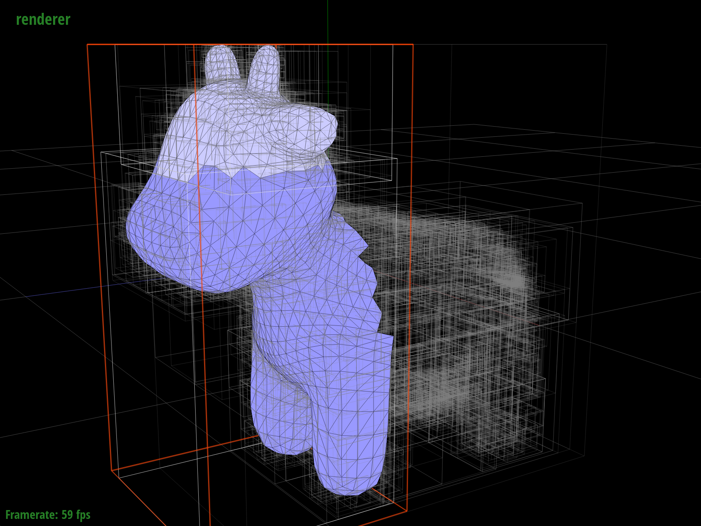
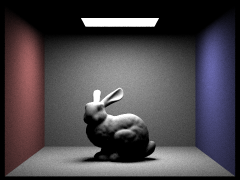
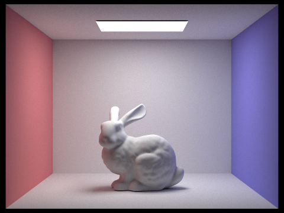
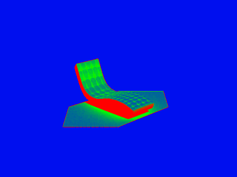

Overview
In this project, we implement physics-based rendering using path-tracing techniques. Specifically, we implemented 5 parts.
- In Part 1 we generated a ray from the virtual camera and implemented primitives-ray intersections like sphere-ray and triangle-ray.
- In Part 2 we implemented an optimization based on a Bounding Volume Hierarchy representation of objects to render our scenes more efficiently.
- In Part 3 we calculated direct illumination using Monte Carlo Estimator, which happens when light goes from a light source directly into the camera or bounces off an object and then goes into the camera.
- In Part 4 we implemented global illumination by recursively bouncing rays of light until they probabilistically stop with the Russian Roulette algorithm.
- In Part 5 we implemented adaptive sampling to render images with less noise.
Part 1: Ray Generation and Scene Intersection (20 Points)
Walk through the ray generation and primitive intersection parts of the rendering pipeline.
For Part 1, we start with generating a ray, given to us by the normalized (x, y) 2D image coordinate. We have two coordinate systems: the 3D world coordinate
For Part 1, within Pathtracer::raytrace_pixel, each pixel is iterated over, and ns_aa rays are generated for each pixel using the Camera::generate_ray function. We generate a ray using the normalized (x, y) 2D image coordinate. We have two coordinate systems: the 3D world coordinate system where objects are located, and the 3D camera coordinate system.
First, we convert the given normalized image coordinate into the camera coordinate system, using the helper function Camera::image_to_camera_coordinate. We know where the camera is located in the world coordinate system with respect to the third axis (z), so we need to find what x and y are in the camera space. To do that, we scale the x and y coordinates by the image size, since we know that the camera space spans from -tan(hFov/2) to tan(nFov/2) in the x-direction, and from -tan(vFov/2) to tan(vFov/2) in the x-direction. The hFov is the angle of the horizontal field of view and vFov is the angle of the field of view in the vertical dimension. Given the coordinate (x,y) in camera space, we find the direction of the ray. The direction of the ray is from the camera origin (0, 0, 0) through the point where ray intersected the sensor plate, in camera coordinate system.
Next, we convert the ray from camera to world coordinates. We set the ray's origin as the camera's position in world space and we normalize the direction of the ray in world coordinate system. Finally, we set the ray's minimum time to the near clipping plane, and ray's maximum time to the far clipping plane, since rays outside the camera clipping planes are invisible to the camera.
The image below shows a diagram of the image to camera conversion.
Triangle primitive intersection is largely covered under the next writeup heading below, so the Sphere primitive intersection is discussed here.
Sphere::intersect is the top-level function call, and calls the other two functions used for detecting a Sphere intersection. The main purpose of this function is to verify if a valid intersection has occurred by calling the other two Sphere methods, and it then updates the passed in Intersection object with the corresponding data, and returns a bool indicating if there was a succesful intersection.
Sphere::has_intersection is a straightforward function, and returns a bool indicating if there has been any valid intersection with the Sphere primitive. This is used by other Sphere methods to check if it's worth doing futher intersection computation.
Sphere::test checks the validity of the intersection. It does this by following the formulae shown on
this lecture slide.
The two t values are calculated. If they are equal, the ray is tangent. If they are different, then they're sorted so t1 is smaller than t2. The ray is then checked if it is at least partially within the sphere. If so, an intersection is detected. This logic portion was updated when working on Part 3, as we realised rays that were originating inside the sphere were not properly detecting a collision on the inside surface, and would treat the sphere as though it were transparent. The function then assigns t1 and t2 to the input t arguments, and returns a bool indicating if a valid intersection was found.
Image below illustrates the sphere-ray intersection diagram.
Explain the triangle intersection algorithm you implemented in your own words.
The triangle intersection algorithm was largely based on the concepts from this webpage, however all code in our project was written by us.
The function Triangle::has_intersection uses the Inside-Outside test to determine if a point is within a triangle. First, the normal of the triangle's plane is calculated by finding the cross product between any 2 of the 3 vectors between the triangle's vertices. The ray's t value when intersecting this plane is checked, and if the t value is invalid (less than zero, outside of the ray's min_t/max_t values) then the function returns false. If the ray does intersect the plane, then the Inside-Outside test is done.
In the image above, we can see the triangle has a counter-clockwise winding, moving from p1 through to p3. The normal given by (p2 - p1)x(p3 - p1) points out of the page. If the winding was clockwise, then the normal would go into the page. The test consists of finding the cross product between (p2 - p1)x(p' - p1). If the point is to the left of the (p2 - p1) vector, then the cross product will also come out of the page. We can then find the dot product between the plane's normal, and the cross product given by (p2 - p1)x(p' - p1). If the result is above 0, we know they are both pointing in the same direction, out of the page. This test is then repeated for the other 2 possible vector combinations, ensuring that the dot product between (p3 - p2)x(p' - p2) and the plane's normal is above 0, and finally that the dot product between (p1 - p3)x(p' - p3) and the plane's normal is also above 0. Inverting the winding changes the direction of the plane's normal, but it also changes the direction of each cross product, so the test remains valid.
If all these tests pass, we know the point is on the plane, the t value is valid, and the point is within the three triangle vertices.
Triangle::intersect calls Triangle::has_intersect to see if it should interpolate the normals of its vertices. If there is an intersection, then we use the method outlined in the link above to calculate the Barycentric coordinates. The method requires calculating the areas of each sub-triangle around p', and dividing it over the total area of the triangle, and this ratio is the corresponding Barycentric coordinate. This method also takes advantage of the fact that the area of a triangle is half the area of the parallelogram formed by taking the cross product of two of its edges. As the Barycentric coordinates are based on the ratio of the sub-triangle areas over the total area, we can simply skip dividing the cross product by 2, and we can also skip calculating the 3rd sub-triangle area, as it can simply be inferred from the other 2 Barycentric coordinates. Once we have the Barycentric coordinates, we multiply them against their corresponding vertex's normal, then populate the provided Intersection object argument, and return true.
Show images with normal shading for a few small .dae files.
|
|
|
Part 2: Bounding Volume Hierarchy (20 Points)
Walk through your BVH construction algorithm. Explain the heuristic you chose for picking the splitting point.
In Part 2, we implemented Bounding Volume Hierarchy (BVH), to speed up how ray-object intersections are calculated in a scene. BVH is a recursive method to partition objects that alleviates inefficiency of a naive method of checking if a ray intersects every object. Our BVH implementation created a significant speed-up of rendering. Without BVH, the running complexity for calculating a ray-object intersection is O(N). With BVH, the running complexity becomes O(log_2(N)). With BVH, we can render .dae files that are made of hundreds of thousands of triangles within seconds, which were infeasible to render without BVH.
We constructed our BVH as follows:
We construct the BVH recursively. We construct the root node and point its start and end properties to the given list of primitives. We then compute the bounding box for all primitives and count how many primitives there are. The figure below shows an example of the BVH, visualized on the cow.dae file. The left part of the BVH is highlighted in red.

cow.dae in BVH Visualizer mode |
In the base case, if the number of primitives is less than maximum leaf size, we set the start and end pointers of the node to return.
Otherwise, we get the median primitive by dividing the total primitive count by 2.Then, we sort all primitives. This is done by seeing which bounding box axis is the largest, then sorting it along this axis. We created custom functions to compare the centroids of bounding boxes (sortByX, sortByY, and sortByZ), which take the corresponding axis value for the input primitive's centroid, and returns true if the first item is smaller than the second item.
The downside of this method is that we need to sort all the primitives every recursive call. Although this isn't very efficient, it is necessary because a child bounding box isn't guaranteed to have the same largest axis as its parent.
Once the list is sorted, we recursively call the construct_bvh function on the left and right side, which become the left and right nodes of the root node. The two halves are created from the sorted list divided at the median primitive.
Our debugging journey included the following:
- It took a while to realise that end() iterators point to the element AFTER the end, so there was no need to add + 1 to the start of the right child bounding box function call
- At first, the idea was to take the average value of centroids, but it became clear that it was pretty common for almost all of the centroids in current bounding box to share an average centroid value, meaning that one child would be empty, and an infinite loop would occur. Sorting by median means it is guaranteed that child nodes have an equal number of primitives.
- At first, we created a new vector of primitive pointers on the heap when reaching the base case, but then we realised that sorting in place was possible, more memory efficient, and avoided any potential memory leaks.
Show images with normal shading for a few large .dae files that you can only render with BVH acceleration.
Below are images that were generated by running the renderer with BVH using 8 threads. The maxplanck.dae contains over 50k primitives. The lucy.dae contains over 130k primitives. Both images are 800 x 600 pixels.

|

|
Compare rendering times on a few scenes with moderately complex geometries with and without BVH acceleration. Present your results in a one-paragraph analysis.
To compare the efficiency of using the BVH, we timed several images being rendered by the same number of rays, using the same number of threads. We used the default values for number of samples and light rays to time the execution: 8 threads, 1 sample per pixel, and 1 light ray, keeping the output image size constant (800x600 pixels). Starting with the simplest cube, which has 12 primitives, there was no speedup. The time to sort the primitives in this small case offset the speedup in traversing the BVH tree. As expected, we see a significant speedup for more complex scenes. Some scenes are divided more evenly, like maxplanck.dae or dragon.dae. The exception where speedup was not as big is building.dae, a scene with a large number of primitives concentrated in one part of the scene. The BVH speedup in this scene was about 30 times, compared to no BVH.
| Filename | # of primitives | # of rays | # threads | Resolution (pixels) | With BVH (seconds) | Without BVH (seconds) | Speedup (times) |
| cube.dae | 12 | 176,768 | 8 | 800x600 | 0.093072 | 0.091904 | 0.9875 |
| bunny.dae | 33,696 | 418,721 | 8 | 800x600 | 0.313027 | 32.3483 | 103.3403 |
| building.dae | 39,506 | 205,141 | 8 | 800x600 | 0.33361 | 9.64124 | 28.8997 |
| maxplanck.dae | 50,801 | 296,593 | 8 | 800x600 | 0.422581 | 64.7466 | 153.2170 |
| dragon.dae | 100,012 | 247,522 | 8 | 800x600 | 0.826029 | 108.905 | 131.8416 |
Part 3: Direct Illumination (20 Points)
Walk through both implementations of the direct lighting function.
Zero Bounce Radiance
The zero_bounce_radiance function is meant to sample visible light sources within the scene, such as area lights. The function is fairly straightforward, and consists of simply retrieving the emission of any surface it intersects with. This emission is then multiplied by the cosine theta of the angle between the normal of the light, and the reverse direction of the incoming ray. This is calculated in the worldspace of the object being hit, and is the implementation of Lambert's cosine law, which is also included in the other radiance functions in Parts 3 and 4. This cosine theta value is not clamped, and is instead the absolute value is taken, as we assume that area lights are emissive on both the top and bottom side.
One Bounce Radiance - Uniform Hemisphere Sampling
The implementation of the one_bounce_radiance function consists of checking whether the -H flag is raised when the pathtracer.exe is invoked. The corresponding function is then called based on this flag.
If uniform hemisphere sampling is selected, then the estimate_direct_lighting_hemisphere function is called. In this function, the number of samples taken, num_samples, is calculated by multiplying the number of lights in the scene by the number of samples per area light. This is done to maintain consistency between estimate_direct_lighting_hemisphere and estimate_direct_lighting_importance. Before this function can be described further, bsdf::sample_f must be explained.
DiffuseBSDF::sample_f: This function takes in the direction of the ray from the camera, wo, and produces a new direction for an outgoing ray, wi. The function also provides the probability of the ray heading in this certain direction, pdf. The function then finally returns the reflectance of the surface determined by the incoming and outgoing ray directions. This is done by calling the function DiffuseBSDF::f. Our implementation for DiffuseBSDF::f simply returns a constant, which is the reflectance of the bsdf divided by pi, as explained in this slide. This is due to the BSDF being specifically for a diffuse surface, which always scatters incoming light in a uniform hemisphere. This uniform hemisphere reflectance is also reflected in our pdf always being 1/2pi, which is one over the solid angle of a hemisphere. The wi returned is also generated randomly by calling the sampler method within the BSDF class.
The sample_f call within one_bounce_radiance is used to provide the reflectance, as well as a new direction for our outgoing ray. This direction wi is converted from object to world space, and then it is checked for a collision using the bvh::intersect function. bvh::intersect returns true if an intersection is detected with a specified ray, and it also populates the provided Intersection struct. If an intersection is detected, the function returns true and we use the information inside the Intersection to calculate the emission of the intersected object, and the cosine theta of the angle of incidence, similar to zero_bounce_radiance. This cosine theta value is clamped to ensure that we only consider positive illuminance values. The cosine theta of the incoming radiance from the light onto the surface is also considered, and is also clamped. The radiance is also divided by the distance to the light, which is given by the t value of the new intersection object. This is done to emulate the phenomenon of light intensity falloff in real life. As mentioned in lectures, the radiance is only divided by the distance and not the distance squared, as it actually looks better this way. Finally, the radiance from the light in this specific direction is multiplied by the returned reflectance of the current surface, as well as the corresponding cosine theta values, and is divided by the pdf, or the chance of the ray being sent in that direction. The function returns the cumulative radiance of all the different light samples returned by rays sent from the current surface hit point.

one_bounce_radiance function. theta_camera is taken care of in our BSDF::f function. theta_i and theta_light are calculated using the object spaces generated at their respective intersections.One Bounce Radiance - Light Importance Sampling
Overall, the estimate_direct_lighting_importance function is similar in structure to estimate_direct_lighting_hemisphere. However, there are some key differences. The function iterates over every light in the scene, and samples them each at a time. If the light is a delta light, then it is only sampled once before iterating to the next light, but if it is not a delta light then it is sampled multiple times according to the -l flag. The ray that is sent to sample the light is also done so directly to the light, and the direction is taken by using the SceneLight::sample_L function. SceneLight::sample_L is similar to BSDF::sample_F, and returns/edits many of the same variables, but takes in the point from which the ray originated, and returns the distance to the light itself alongside the radiance and direction. The distance to the light is taken into consideration, and the returned radiance of the light is divided by this distance to emulate real life light falloff.
The new ray that is sent towards the light is also a "shadow ray." The light calculations are only performed if the ray doesn't intersect a scene object. If a scene object is intersected, then no radiance is added for the current sample. The shadow ray is created by setting the max_t for the ray to be the distance to the light, minus a small delta. This means that the light itself is never sampled directly, as the information required to calculate the radiance was already retrieved from the sample_L function call.
Lastly, when calculating the irradiance from each light, the type of light is considered, just as with uniform hemisphere sampling. Delta lights don't need to be divided by the number of samples per area light. Infinite Hemisphere and Directional lights both don't have a valid distance to light, so light falloff isn't considered. Point lights and Area lights do, and so falloff is considered.
Show some images rendered with both implementations of the direct lighting function.
| Uniform Hemisphere Sampling | Light Sampling |
|---|---|
|

|
|
|
|
|
All images shown above were rendered using -s 64 and -l 32.
Focus on one particular scene with at least one area light and compare the noise levels in soft shadows when rendering with 1, 4, 16, and 64 light rays (the -l flag) and with 1 sample per pixel (the -s flag) using light sampling, not uniform hemisphere sampling.
|
|
|
|
|
|
For all the images, the shadows can be seen as much more intense in the centre, and softening towards the edge. For the case with a single light sample (-l 1), because each pixel only has 1 sample and 1 light sample, the shadows were either at full intensity or not present at all. This is due to there being a singular light sample ray, meaning that the light was either reached or not. This leads to a speckled look, but from a distance it still gives the appearance of a shadow gradually softening out. As light samples increased, the shadows became softer and more gradual, and this is most obvious in the -l 64 image.
Compare the results between uniform hemisphere sampling and lighting sampling in a one-paragraph analysis.
Most noticeably, the importance sampling results contained much less noise for a given pixel sample and light sample rate. More subtly, highlights in the importance sampled images reached "further down" away from the light than in the uniform images. Notice that on the importance sampled spheres, especially the right sphere, around half of the sphere is lit. In comparison, the uniform sampled spheres have a much smaller lit portion. This is also noticeable in the top corners of the room where it meets the roof. This makes sense, as in a uniformly sampled approach, sampling an area that has a near perpendicular angle to the light has an improbably chance of hitting the light. By targeting the light itself, importance sampling allows these near perpendicular regions to receive lighting. These effects are also visible on the bunny, and are noted below.
Part 4: Global Illumination (20 Points)
Walk through your implementation of the indirect lighting function.
Global illumination consists of direct and indirect light. The indirect lightning comes from light bouncing off objects in the scene several times before reaching the camera. We implemented global illumination by adding together zero-bounce (direct) and the at-least-one-bounce radiance (indirect). The zero-bounce radiance displays light directly from the light source. The at-least-one-bounce-radiance collects and displays light by adding radiance from rays bouncing at least once and bouncing multiple times, until a termination condition is reached. We used recursion to implement at_least_one_bounce_radiance and used the Russian Roulette as the unbiased probabilistic termination condition. The Russian Roulette ensures that all rays stop. We set the probability of stopping to 0.3. The rays also stop if they reach their maximum depth, to avoid long termination times. The at_least_one_bounce_radiance function never actually tries to sample a light source itself, and calls the one_bounce_radiance to sample radiance. We decrement the ray's depth on each recursive call, so the recursion collects the radiance from the point of the last ray's intersection (the maximum depth), and then adds the radiance as it recurses back up the stack, until the initial at_least_one_bounce_radiance call is reached.
For each pixel, on each recursive call, we collect the amount of light at each bounce, then add the light from all bounces together to get the overall global illumination. We recursively create new rays at each intersection point (bounce), until the ray stops either by reaching the maximum depth or by the Russian Roulette (the coin flip, which returns a boolean that stops the recursion).
Show some images rendered with global (direct and indirect) illumination. Use 1024 samples per pixel.
Images below show global illumination and were rendered using 1024 samples per pixel and 4 light rays. Both images are 480x360 pixels. The maximum ray depth was set to 5.
CBspheres_lambertian.dae) |
CBbunny.dae) |
Pick one scene and compare rendered views first with only direct illumination, then only indirect illumination. Use 1024 samples per pixel.
To compare direct illumination with indirect illumination, we picked a scene with two spheres (CBspheres_lambertian.dae). First, we rendered the scene with direct illumination only, by collecting light from the light source in the zero_bounce_radiance and a modified at_least_one_bounce_radiance function. We modified the code in at_least_one_bounce_radiance to return after 1 bounce (at the ray depth of 1), in practice producing the same effect as calling the non-recursive one_bounce_radiance function. For indirect illumination only, we modified the total illumination to include the light from at_least_one_bounce_radiance but end when the ray depth is at 1. The indirect light doesn't include the light that comes directly from the light source, or the light from the first bounce. We calculate the illumination value by solving the reflectance equation using Monte Carlo Estimator. To get the radiance at the intersection point, we multiply the value of the recursive call of the newly created ray, the BSDF of the original intersection, the cosine of the angle between the incoming light and the normal to the object's surface, and divide by the probability distribution function.
See below for comparison images, generated at 480x360 pixel resolution, 1024 samples per pixel, and 4 light rays. The maximum ray depth for indirect illumination was set to 5.
CBspheres_lambertian.dae) |
CBspheres_lambertian.dae) |
In the direct illumination only (left picture above), we see the light that goes directly from the light into the camera (zero bounce) and light that bounces off objects once before hitting the camera. That's why we see the spheres illuminated from the top and not from the bottom. In the indirect illumination (right picture above), there's no direct light, so the ceiling is completely dark. Moreover, the spheres are not illuminated from above because we see only the light that bounces more than once. The overall indirect illumination images is darker than direct illumination image. Except for the colored shadows, the indirect illumination has almost no color, compared to the direct illumination image. Both images were rendered at 480x360 pixel resolution, 1024 samples per pixel, and 4 light rays. For indirect illumination, the maximum ray depth was 5.
For CBbunny.dae, compare rendered views with max_ray_depth set to 0, 1, 2, 3, and 100 (the -m flag). Use 1024 samples per pixel.
Images below show the same image (CBbunny.dae) rendered with 1024 samples per pixel, 4 light rays, in a 480x360 size with various maximum ray depths, starting at 0 max ray depth up to 100.
|
|
|
|
|
|

|
As seen in the images above, the 0 max ray depth is the zero-bounce direct illumination, where the only light visible is the light emitted by the light source. The 1 max ray depth is the one-bounce direct illumination, where the light that's visible is the light from the light source and the light that bounces off objects once, before reaching the camera. The max ray depth 2, 3, and 100 rely on the recursive at-least-one-bounce function, and include both direct and indirect illumination. As the ray max depth increases, the amount of total light in the image increases, so the images become brighter as the max depth increases. The last image with max depth ray 100 has the most light and more colored light because more light bouncing off the colored walls is included in the total light calculation. The 100 max ray depth took the longest to render, around 5 minutes, whereas the other images took seconds.
Pick one scene and compare rendered views with various sample-per-pixel rates, including at least 1, 2, 4, 8, 16, 64, and 1024. Use 4 light rays.
We picked CBspheres_lambertian.dae to compare rendered views with different sample per pixel rates. In the images below, all images were rendered with global illumination using 480x360 pixel resolution, 4 light rays, and 5 maximum ray depth. The sample rate varied from 1 to 2048.
CBspheres_lambertian.dae) |
CBspheres_lambertian.dae) |
CBspheres_lambertian.dae) |
CBspheres_lambertian.dae) |
CBspheres_lambertian.dae) |
CBspheres_lambertian.dae) |
CBspheres_lambertian.dae) |
CBspheres_lambertian.dae) |
Images above illustrate the Monte Carlo Estimator in action. When we use 1 sample per pixel, the image is grainy and has a lot of noise, but is still realistically rendered with a good amount of light. However, since there's only 1 random sample per pixel, the approximation of the color in each pixel in the image is not accurate. With 2 samples per pixel, our image becomes less noisy, but it is still quite grainy. In particular, the spheres where there's light-to-dark transition look very choppy (the transition is not smooth). With 4 and 8 sampler per pixel, the transitions become smoother, but you can still see a lot of noise in flat surfaces like the ceiling and in the areas of fast color change like the bottom of the closer sphere. The 16 samples per pixel, most of the noise is in these transition areas. With 64 samples per pixel, most of the noise from flat surfaces is gone but there are still a few grainy areas on the spheres. With 1024 the image looks smooth with no grainy or noise appearance. Overall, even the 1 sample per pixel rendering captures the areas where there's a lot of light (the top of the spheres directly facing the light) and where there's a lot of shadow (underneath the spheres). The images get progressively less grainy and more smooth as the sample rate increases, with 64 samples showing some noise and 1024 having imperceptible amount of noise. The 2048 samples per pixel looks very close to the 1024 samples per pixel because our estimation of light converges to the true solution, so the difference in pixel color value is barely noticeable.
Part 5: Adaptive Sampling (20 Points)
Explain adaptive sampling. Walk through your implementation of the adaptive sampling.
Adaptive sampling is a technique to reduce the amount of noise produced by the Monte Carlo Estimator, seen in Parts 3 and 4. Rather than sampling every part of the image uniformly, adaptive sampling gets more samples from the regions that are more difficult to render. To determine which regions are more difficult to sample, we use statistical approach to measure each pixel's convergence, given by the formula below. The sigma is the variance and n is the number of samples. We check the convergence against a maximum tolerance times the mean of that pixel's value, calculated as the average of the n samples.
In the PathTracer::raytrace_pixel, we calculate the convergence of each pixel n times, where n is the number of samples. We find the illuminance for every sample and for every samplesPerBatch, we find statistical mean and standard deviation. We then check if the pixel value converges as 1.96 times the standard deviation divided by the square root of the variance. If the pixel converges, we stop calculating its radiance and add it to the overall radiance integral.
Pick two scenes and render them with at least 2048 samples per pixel. Show a good sampling rate image with clearly visible differences in sampling rate over various regions and pixels. Include both your sample rate image, which shows your how your adaptive sampling changes depending on which part of the image you are rendering, and your noise-free rendered result. Use 1 sample per light and at least 5 for max ray depth.
|

|

|
|
|

|
Unfortunately, our implementation did not exactly match the reference solution images in the spec. However, we can clearly see that areas that have either full light or no light are fully blue, meaning they converged quickly. This is seen with the areas outside of the box and the bench, as well as the top of the bunny. The most sampled areas are the red, and those are the ones that are in the shade. This makes sense, as these darker areas have the most potential to change in lighting depending on where the indirect bounces go.
This project was a team effort. We worked on each part by ourselves first, then met to discuss the solution. When we encountered bugs or were unsure about the concepts, we worked on the code together. In the end, we each worked on all parts of the project, either as the main author or as a debugger. We pair-programmed the more difficult parts of the project, such as part 3.3. We both contributed to the project write-up, checking our understanding of all parts of this project. If someone coded more of the implementation for a certain part or function, we alternated the writeup, so that the person who didn't write the bulk of the code could have a chance to read through and understand the code. Overall, it was both challenging and rewarding.